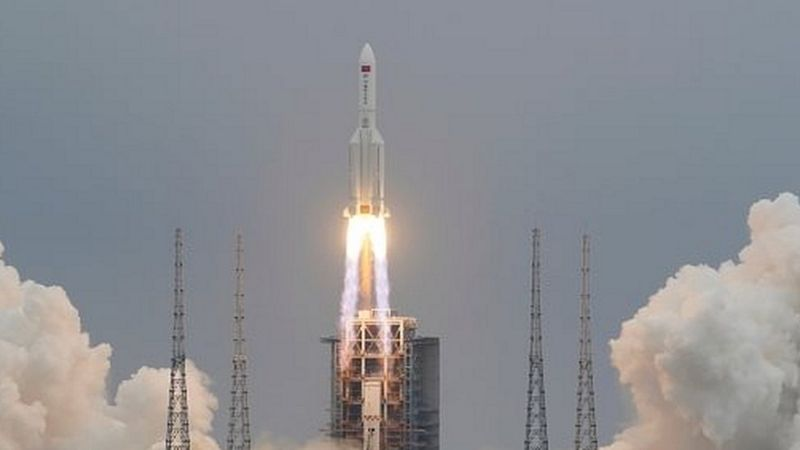

Últimas Noticias

Los restos del cohete chino Long March 5B cayeron en el mar Arábigo, según informaron las autoridades
chinas.
Según medios estatales chinos, partes del cohete ingresaron a la atmósfera terrestre a las 10:24 del
domingo, hora de Pekín (02:24 GMT).
El reingreso de los restos del cohete también fue confirmado por el Escuadrón 18 de Control Espacial de
Estados Unidos, que se dedica a rastrear objetos artificiales en la órbita terrestre.
El Comando Espacial de Estados Unidos dijo en un comunicado que podía "confirmar que el Long March 5B volvió
a entrar en la península Arábiga". "Se desconoce si los escombros impactaron la tierra o el agua", dijo el
comando.
Redacción: BBC News Mundo 9 mayo 2021